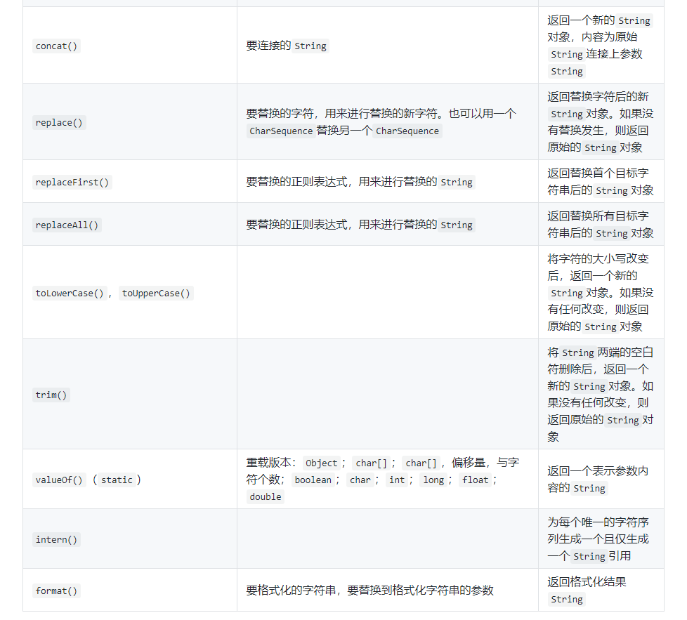

具体见 《OnJava8》之字符串
1.基础
①字符串的不可变
- String 对象是不可变的。String 类中每一个看起来会修改 String 值的方法，实际上都是创建了一个全新的 String 对象，以包含修改后的字符串内容，而最初的 String 对象则丝毫未动。
- 每当把 String 对象作为方法的参数时，都会复制一份引用，而该引用所指向的对象其实一直待在单一的物理位置上，从未动过。
- 代码演示如下：
1 | package string; |
②+ 的重载
- String 对象是不可变的，可以给一个 String 对象添加任意多的别名。因为 String 是只读的，所以指向它的任何引用都不可能修改它的值，因此，也就不会影响到其他引用。
- 不可变性会带来一定的效率问题。为 String 对象重载的 + 操作符就是一个例子。
- 如下代码演示了操作符 + 可以用来连接 String：
1 | package string; |
- 让我们用 JDK 自带的 javap 工具来反编译以上代码，看看以上代码是如何工作的。
1 | public class string.Concatenation { |
- 编译器自动引入了 java.lang.StringBuilder 类。虽然源代码中并没有使用 StringBuilder 类，但是编译器却自作主张地使用了它，就因为它更高效。
- 在这里，编译器创建了一个 StringBuilder 对象，用于构建最终的 String，并对每个字符串调用了一次 append() 方法，共计 4 次。最后调用 toString() 生成结果，并存为 s (使用的命令为 astore_2)。
2.字符串操作
①常用方法

- 从上表可知，当需要改变字符串的内容时，String 类的方法都会返回一个新的 String 对象。同时，如果内容不改变，String 方法只会返回原始对象的一个引用，这样可以节约存储空间以及避免额外的开销。
②代码演示
1 | package string; |
3.格式化输出
①printf() 风格
- C 语言的
printf()并不像 Java 那样连接字符串，它使用一个简单的格式化字符串，加上要插入其中的值，然后将其格式化输出。printf()并不使用重载的 + 操作符（C 语言没有重载）来连接引号内的字符串或字符串变量，而是使用特殊的占位符来表示数据将来的位置，并且它还将插入格式化字符串的参数，以逗号分隔，排成一行。例如：
1 | System.out.printf("Row 1: [%d %f]%n", x, y); |
- Java SE5 引入了 format() 方法，可用于 PrintStream 或者 PrintWriter 对象，其中也包括 System.out 对象。format() 方法模仿了 C 语言的 printf()。Java 中 format() 和 printf() 是等价的，都模仿了 C 语言中
printf()风格的格式化输出，使得控制输出的代码更加简单，也给予了 Java 开发者对于输出格式与排列更加大的控制能力 。 - 另外，String 类也有一个 static format() 方法，可以格式化字符串。
- Java 中的占位符如下图所示：
- 代码演示如下：
1 | package string; |
②Formatter 类
③格式化修饰符
④Formatter 转换
4.正则表达式
5.扫描输入
①读取数据
②Scanner类
③用正则表达式扫描
④StringTokenizer类
附录
- 我的个人博客：messi1002.top
- 如有错误或疑惑之处 请联系 wjymessi@163.com